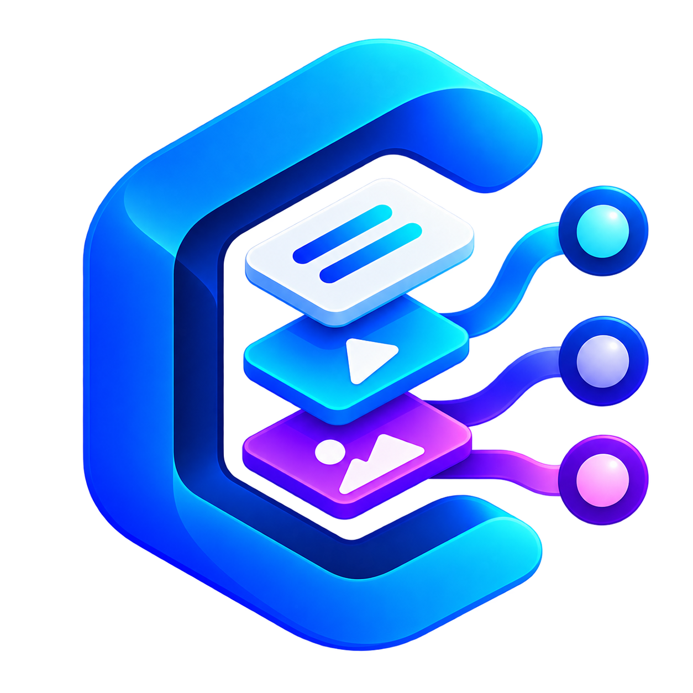

Instale
Baixe o instalador oficial e abra o ContentFlow no Windows.

ContentFlowCONTENTFLOW PARA WINDOWS
Organize cada vídeo, transforme sua estratégia em Métodos e conecte as ferramentas que fazem o trabalho acontecer.
✓Windows 10 ou 11 · Sem login obrigatório
ContentFlow é gratuito. E sempre será.
COMECE EM MINUTOS
Do primeiro download ao primeiro vídeo em produção.
Baixe o instalador oficial e abra o ContentFlow no Windows.
Dê um espaço próprio para sua estratégia, projetos e referências.
Organize o passo a passo que transforma uma ideia em vídeo.
Escolha quem executa cada etapa: você, IA, código ou uma ferramenta.
Acompanhe cada projeto e avance quando estiver pronto.
SEU JEITO DE PRODUZIR
É o mapa do seu processo: o que vem primeiro, quem faz cada parte, o que entra e o que precisa sair.
Conheça os Métodos →O Método guarda a estratégia. Plugins executam cada etapa.
COMUNIDADE CONTENTFLOW VIP
Participe de três aulas ao vivo por semana para tirar dúvidas sobre o aplicativo, acompanhar as melhorias em tempo real e aprender estratégia de YouTube com o ContentFlow como base.